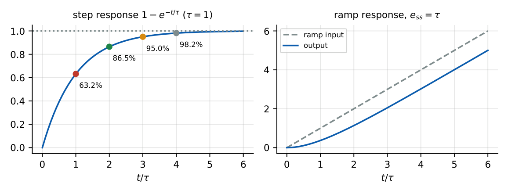

First-Order Systems
Time constant, rise time, settling time of \(1/(\tau s+1)\); ramp-response error; reading \(\tau\) from a plot. Simple, high-probability marks.
8.1 Core concept
\(\dfrac{C(s)}{R(s)}=\dfrac{1}{\tau s+1}\) (DC gain \(K\): \(\dfrac{K}{\tau s+1}\)). Pole at \(s=-1/\tau\); \(\tau\) is the time constant.
8.2 Responses
Step: \(C=\dfrac1{s(\tau s+1)}=\dfrac1s-\dfrac{\tau}{\tau s+1}\Rightarrow c=1-e^{-t/\tau}\).
Ramp: \(C=\dfrac{1}{s^2(\tau s+1)}\Rightarrow c=t-\tau+\tau e^{-t/\tau}\); error \(e=r-c=\tau(1-e^{-t/\tau})\to\tau\).
Impulse: \(c=\dfrac1\tau e^{-t/\tau}\).

8.3 Specifications
| Quantity | Definition | Value |
|---|---|---|
| Time constant \(\tau\) | time to reach \(63.2\%\) of final value | \(\tau\) |
| Delay time \(t_d\) | \(50\%\) | \(0.693\tau\) |
| Rise time \(t_r\) | \(10\%\to90\%\) | \(2.2\tau\) |
| Settling time \(t_s\) (2%) | within \(\pm2\%\) | \(4\tau\) |
| Settling time (5%) | within \(\pm5\%\) | \(3\tau\) |
| Initial slope of step response | \(\dfrac{dc}{dt}\Big|_0\) | \(\dfrac1\tau\) |
| Bandwidth (3 dB) | \(|G(j\omega)|=1/\sqrt2\) | \(1/\tau\) |
Step response \(c(t)=5(1-e^{-4t})\): \(K=5\), \(\tau=0.25\) s, \(t_s(2\%)=1\) s, \(t_r=0.55\) s.
\(G=\dfrac{10}{s}\), unity feedback: \(T=\dfrac{10}{s+10}=\dfrac{1}{0.1s+1}\), \(\tau=0.1\) s, \(t_s=0.4\) s.
To reach \(90\%\): \(1-e^{-t/\tau}=0.9\Rightarrow t=\tau\ln10=2.303\tau\). To reach \(99\%\): \(4.6\tau\).
\(\tau=0.2\) s and input \(r=5t\): steady error \(=5\tau=1\) (output lags by \(\tau\) in time, error \(5\times0.2=1\)).
8.4 Physical interpretation
The pole is the rate of decay: the farther left, the faster the system. A large gain in a feedback loop moves the pole left (\(-(1+K)/\tau\)) and shortens \(\tau\) (Chapter 4). Electrically \(\tau=RC\) or \(L/R\); thermally \(\tau=\) thermal resistance \(\times\) capacity.
\(63.2\%\) at \(\tau\), \(95\%\) at \(3\tau\), \(98\%\) at \(4\tau\). Tangent at \(t=0\) hits the final value at \(t=\tau\). Ramp error \(=\tau\) (times slope).
(i) \(t_r\) (\(10\)–\(90\%\)) \(\neq\) \(\tau\). (ii) \(t_s\) depends on the band: \(4\tau\) (2%) vs \(3\tau\) (5%). (iii) The ramp error is \(\tau\) for unit slope, not zero: a first-order lag cannot track a ramp exactly.
Q1. At \(t=\tau\) the step response of a first-order system reaches (A) \(50\%\) (B) \(63.2\%\) (C) \(86.5\%\) (D) \(95\%\).
Q2. The \(2\%\) settling time of \(\dfrac{1}{0.5s+1}\) is (A) \(0.5\) (B) \(1\) (C) \(2\) (D) \(4\) s.
Q3. The steady-state error of \(\dfrac{1}{\tau s+1}\) to a unit ramp is (A) \(0\) (B) \(\tau\) (C) \(1/\tau\) (D) \(\infty\).
Answers: Q1 (B). Q2 (C): \(4\times0.5\). Q3 (B).
Q4. A unit step gives \(c(t)=3(1-e^{-2t})\). The system is (A) \(\dfrac{3}{2s+1}\) (B) \(\dfrac{6}{s+2}\) (C) \(\dfrac{3}{s+2}\) (D) \(\dfrac{2}{s+3}\).
Q5. A thermometer (\(\tau=8\) s) is plunged into water. The time to reach \(95\%\) is about (A) \(8\) (B) \(16\) (C) \(24\) (D) \(32\) s.
Answers: Q4 (B): \(\frac{3\cdot2}{s(s+2)}\Rightarrow G=\dfrac6{s+2}\). Q5 (C): \(3\tau\).
Q6. \(G=\dfrac{20}{s+5}\) under unity feedback: the closed-loop time constant is s (two decimals).
Q7. Rise time (\(10\)–\(90\%\)) of \(\tau=0.4\) s is s.
Answers: Q6: \(T=20/(s+25)\), \(\tau=0.04\). Q7: \(2.2\times0.4=0.88\).
Q8. For \(\dfrac{1}{\tau s+1}\): (A) pole at \(-1/\tau\) (B) step response has overshoot (C) bandwidth \(=1/\tau\) (D) \(t_s(2\%)=4\tau\).
Answers: Q8: (A), (C), (D).
A first-order system \(\dfrac{K}{\tau s+1}\) has step response \(=0.5\) at \(t=1\) s and \(\to2\) at steady state. Then \(K=2\) and \(2(1-e^{-1/\tau})=0.5\Rightarrow e^{-1/\tau}=0.75\Rightarrow\tau=3.476\) s.
T1. Show that the tangent at \(t=0\) to the step response of \(1/(\tau s+1)\) reaches unity at \(t=\tau\).
T2. A system has \(\tau=2\) s, DC gain 3. Give the \(2\%\) settling time and the output at \(t=2\) s for a unit step.
Answers: T1: slope \(=1/\tau\). T2: \(8\) s; \(3(1-e^{-1})=1.90\).
- \(G=K/(\tau s+1)\); pole \(-1/\tau\); \(c=K(1-e^{-t/\tau})\).
- \(t_r=2.2\tau\), \(t_d=0.69\tau\), \(t_s=4\tau\) (2%), \(3\tau\) (5%); bandwidth \(1/\tau\).
- Ramp error \(=\tau\); no overshoot ever.